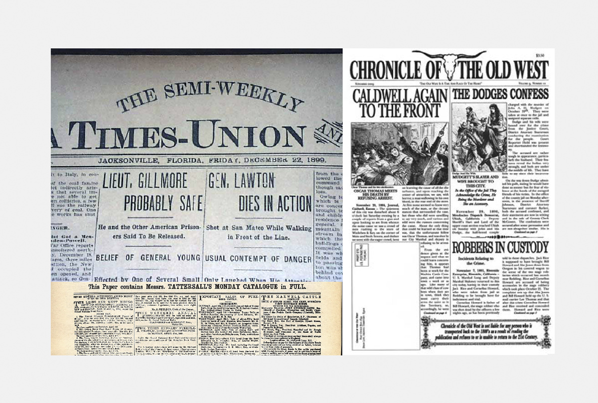
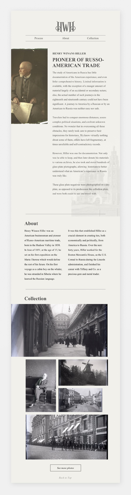

Henry Winans Hiller was an American businessman and pioneer of Russo-American maritime trade. He also took hundreds of photos that were preserved on glass plates. I created a website to display his photos and link them to a bigger gallery of his photos.
Since I would be mostly using photos, I wanted to give the site an old twist rather than a more modern photography gallery. I decided to look into newspapers that were published in the late 1800s and early 1900s to get inspiration.
Basing my design off old newspapers I created a simple news article like biography of Henry Hiller along with a few of his photos at the bottom and a link to see or download more photos.
